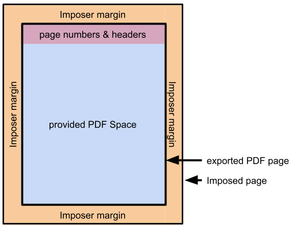

|
Pick your plate, plan your (pro)portions! The PDF Potluck tool has been written with the Bookbinder JS (Imposition tool) in mind. The way headers and page numbers are placed assumes that all margins (ex: space above the page number) will be applied during the imposition step. |  |
|
Exported PDF Page:
|
Here are some known presets, but you'll want to reduce them to take margins into account: |
|
points w/ additional padding of points below. | |
|
Select your sides Horizontal page content positioning : Vertical page content positioning : Verso header : Recto header : Header & Table of Contents font : Outline the PDF content (for debugging purposes): |
|
Collect your content We've provided some TEST CONTENT to start with so you can have an idea of how the whole thing works before you craft your entries. Grab recipes on the left by their weird set of squares and drag them over to add to your book. | |
|
The Bounty Before You
[X]
Ignore this title it is long and it keeps going and stuff like that
sharks
3
| What You've Added to Your Plate |
|
| |